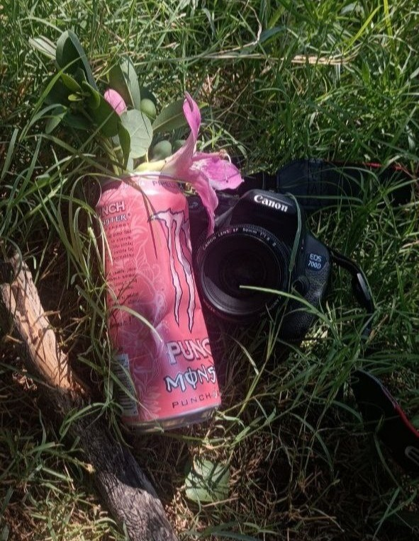

Foto
La maggior parte dei soggetti nelle foto sono ambienti, la natura e ciò che ci circonda,
rappresentando il tutto con colori saturi, vividi e giocando a volte con il contrasto dei colori.
Durante il triennio accademico, ho sviluppato un portfolio fotografico dal tema chiamato “Contaminazione”,
di cui alcune anteprime sono rilevate nella sezione sotto: ho voluto rappresentare il mio modo di contaminazione
contrario a quello che alle volte ci viene in mente, ovvero la natura che sovrasta l’uomo con i suoi oggetti di uso quotidiano.
Alcuni lavori